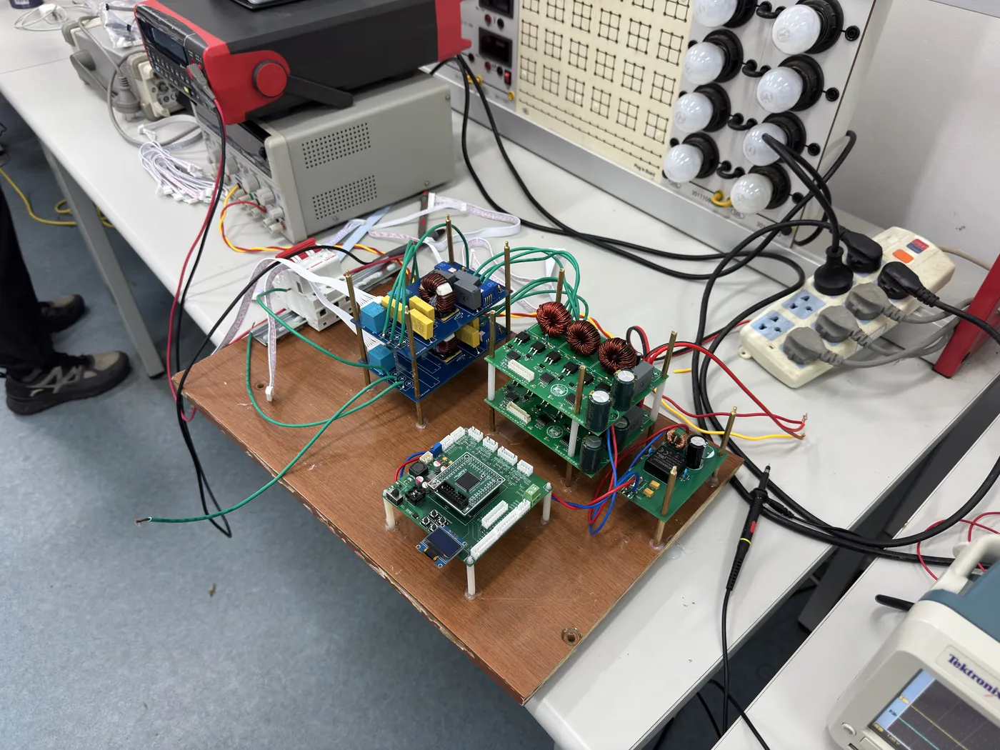
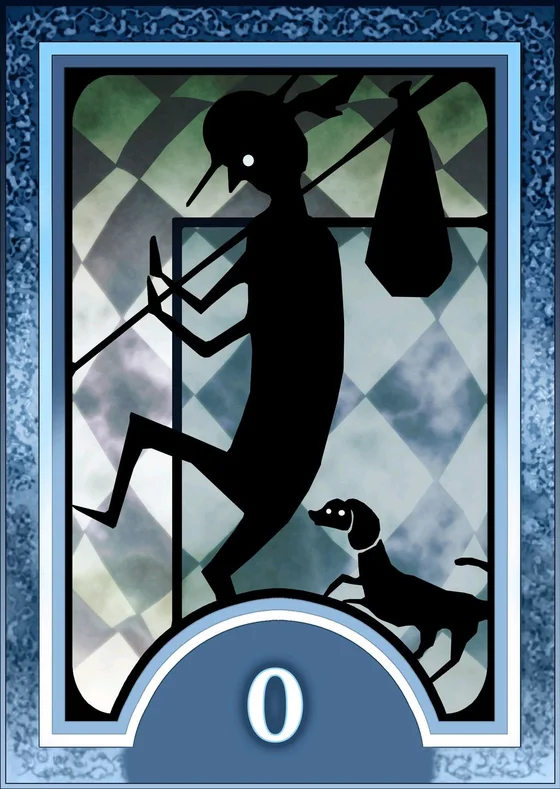
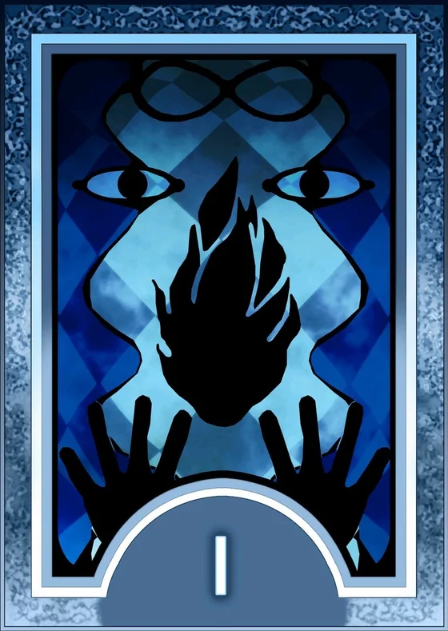
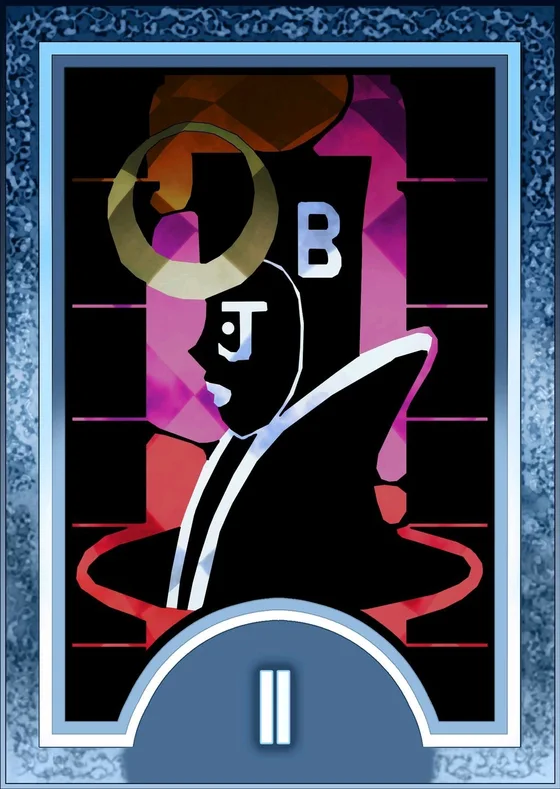
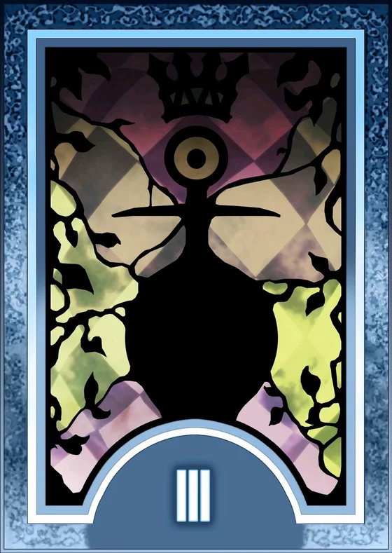
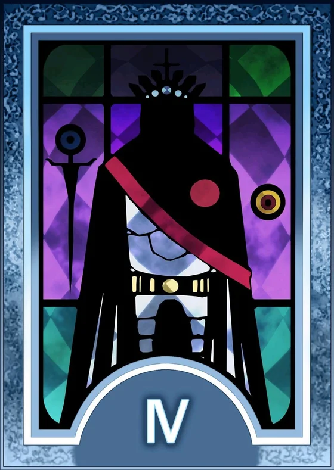
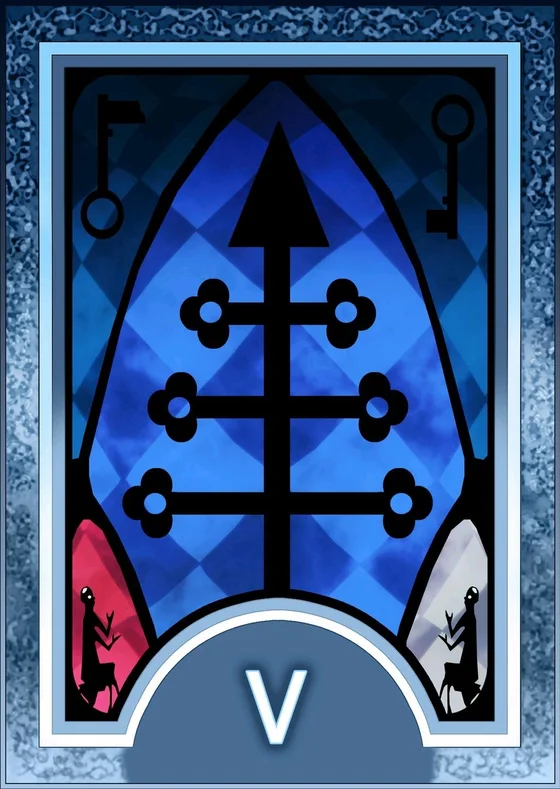
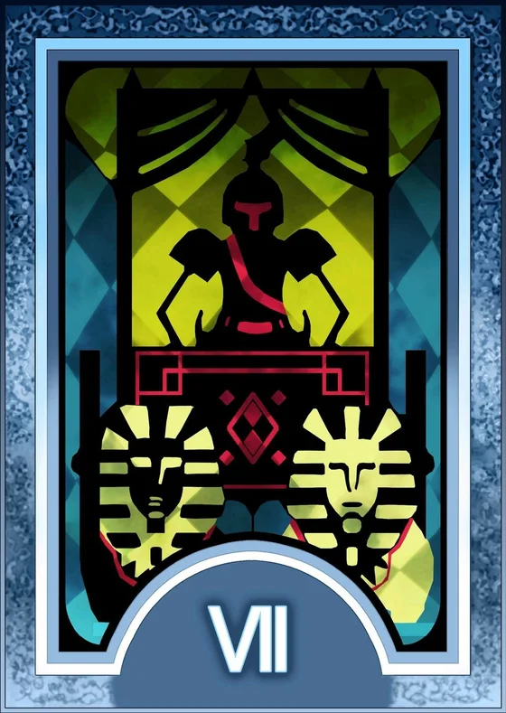
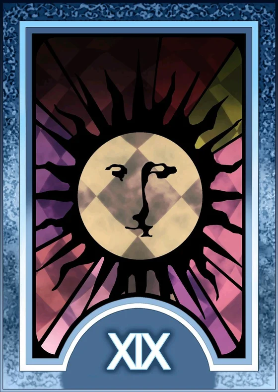

广而不卷 BREADTH
电赛、课题组、两段实习、开源社团、图书馆志愿者，同时做好几件事，哪件都不死磕。
湖大电气，2027 届。
大学是我人生的大基建时代。
电赛、课题组、两段实习、开源社团、图书馆志愿者，同时做好几件事，哪件都不死磕。
日语、电赛、实验室、实习，一项一项打地基。
很多想不明白的事，反而是在路上想通的。长沙夜里骑车兜风的时候，或者去机场的快线上。
2024 是一场向外的旅程，2025 是一场向内的旅程；到了 2026，阅历终于开始兑现。
从广东来到长沙，电气工程及其自动化。第一次离家这么远。
美赛队长；两周日本，人生第一场烟火大会。回来以后玩了 P5R 和 P3R，开始听爵士和 City Pop。
做电赛项目负责人，画出三相逆变主板；进入国家电能变换中心课题组；年底在 FPGA 上写了一条 VGA 贪吃蛇。
1 月在广汽埃安智能制造实习；夏天去了一趟北京，又在惠州供电局实习。秋招在大湾区来回跑，最后签了广东电网。
回到广东，成为一名电网工程师。季節は巡る。
做过的几样东西，从功率板到一条像素蛇。左边选一个，点「查看设定」看参数和代码。电赛和 SST 的过程另外写在随记里。
DC-AC 逆变输出三相 50Hz / 线电压 32V / 2A，再经 PWM 整流把能量送回直流母线。实测 THD < 0.3%（题目要求 ≤ 2%），回馈后直流电源输出功率 < 5W。作为项目负责人，我画了三相逆变主板与 EMI 板的原理图和 PCB，也负责板级调试，四天三夜里把它调通。
查看设定 →赛题要求：变流器 1（DC-AC）输出 f=50Hz、线电压 32V±0.25V、额定线电流 2A 的三相对称正弦电；THD ≤ 2%，负载调整率 ≤ 0.3%，频率 20–100Hz 可调、步进 1Hz。发挥部分要求变流器 2（AC-DC）把能量回馈到变流器 1 的输入端，与直流电源共同供电，直流电源输出功率越小越好。
| 指标 | 题目要求 | 我们的结果 |
|---|---|---|
| 输出 THD | ≤ 2% | < 0.3% |
| 直流电源功率 Pd（I1=2A） | 越小越好 | < 5 W |
| 输出频率 | 20–100 Hz，步进 1 Hz | 满足 |


# 主板关键器件 · 位号级（Schematic_电赛主板） power Q1~Q6 IPB042N10N3 100V / 4.2mΩ driver U1~U3 UCC21520DWR 隔离双通道 · 带 DT 死区 gate 6.8Ω + SS34 关断加速 · RS1JG 自举 bus C26~28 1000µF / 63V × 3 filter L1~L3 470µH / 10A × 3 aux U4 LM5017 · 母线自供电 sense CT1/2 CKSR 霍尔 · PT1/2 ZMPT101B
cell 从 H 桥一路换到准 NPC 四电平，把每相浮地驱动从 8 套压到 3 套。我负责 Simulink 建模与控制回路。
查看设定 →固态变压器（SST）用中高频电力电子变换 + 中频隔离替代工频变压器，把 10kV 中压交流转成低压直流。前级走级联多电平方向，级联的单元（cell）是一个可替换的模块：只要满足「独立浮地直流 + 全桥双向输出」，H 桥、三电平、四电平都能当 cell。
| cell | 每 cell 电平 | 凑 17 电平 | 问题 |
|---|---|---|---|
| H 桥 | 3 | 8 个 cell · 8 套浮地驱动 | 器件与绝缘做不下来 |
| T-NPC 三电平 | 5 | 4 个 cell | 1200V+600V，上下管电压 / 损耗不均 |
| 准 NPC 四电平 | 7 | 3 个 cell · 3 套浮地驱动 | 中间管满压 3300V |
反直觉的一点：换成四电平 cell，开关总数（32 → 36）并没有减少，真正省下的是最烧钱的独立浮地驱动——每套都要隔离供电、隔离采样和中压绝缘。
% 准 PR 控制器 G(s) = Kp + Kr · 2·Wc·s / (s² + 2·Wc·s + Wo²) Wo = 2π·50 ≈ 314 rad/s % 50Hz 处高增益 → 无静差 Wc = 5 rad/s % 展宽谐振，抗电网频偏 % Tustin 离散化 → 二阶 IIR（biquad），可直接上 DSP
ADC 采样 Vi 并在 OLED 显示，ePWM 驱动呼吸灯，亮度随 Vi 线性变化；按键状态机支持消抖与长按连发。
查看设定 →考核题：A、B 两块主控板各带按键、显示和两颗 LED，板间连线不超过 3 根。四颗 LED 按 D1→D4 轮流呼吸，周期由按键在 0 / 0.5 / 1 / 2 秒四档间切换；A 板采样 0–3.3V 的 Vi，误差不超过 0.05V，呼吸灯最大亮度随 Vi 连续变化；任一板断电，另一板 2 秒内显示通信失效。
#pragma CODE_SECTION(INT_myADCA_1_ISR, ".TI.ramfunc"); __interrupt void INT_myADCA_1_ISR(void) { float k = MIN_BRIGHTNESS + (m_adc.Udc / 3.3f) * (MAX_BRIGHTNESS - MIN_BRIGHTNESS); // 亮度 ∝ Vi uint16_t duty = (uint16_t)(MAX_DUTY * k); uint32_t q = total_steps / 4, s = breath_count % total_steps; if (s < q) epwm1 = s * duty / q; // D1 灭→亮 else if (s < 2*q) epwm1 = duty - (s - q) * duty / q; // D1 亮→灭 // …… D2 同理，周期结束 cycle_count = (cycle_count + 1) % 10 EPwm1Regs.CMPA.bit.CMPA = epwm1; }
无显存实时渲染，128 节寄存器蛇身，1–8 颗豆子可调，吃一颗长 4 节并自动加速。
查看设定 →基于 Altera DE2-115 的 VGA 贪吃蛇：25MHz 像素时钟驱动 640×480@60Hz，按扫描坐标逐像素决定颜色，不用显存。KEY0–3 控制方向，SW0 复位、SW1 暂停，SW[4:2] 实时设置 1–8 颗豆子；每吃一颗蛇身加 4 节，越长越快；复位后进入待机，按方向键才开局；撞墙后屏幕红白闪烁。
snake_x/y[0:127]，每个移动节拍从尾到头移位，再按方向更新蛇头。x[5] ^ y[5]）。VGA_BLANK_N 未拉高，DAC 处于消隐 → 强制置 1。game_started 待机状态；豆子数闪烁：SW 输入锁存去抖。parameter H_ACTIVE=640, H_FRONT=16, H_SYNC=96, H_TOTAL=800; parameter V_ACTIVE=480, V_FRONT=10, V_SYNC=2, V_TOTAL=525; reg [9:0] snake_x [0:127]; reg [9:0] snake_y [0:127]; always @(posedge move_tick) begin for (i = 127; i > 0; i = i - 1) begin snake_x[i] <= snake_x[i-1]; snake_y[i] <= snake_y[i-1]; end end assign VGA_BLANK_N = 1'b1; // 不拉高就黑屏
定义带发球方权重的「势头分」，用双方势头差 R 复现比赛走势，再用随机森林预测波动并找出关键因素。
查看设定 →2024 美赛 C 题，以温网决赛为背景研究网球比赛中的「势头」。论文题为 Using R as the Momentum of Tennis Matches。
我担任队长，负责探索性数据分析与预测建模，Python 代码整理为 1–5 的流水线。
from sklearn.ensemble import RandomForestRegressor from sklearn.model_selection import train_test_split X_train, X_test, y_train, y_test = train_test_split( X, R, test_size=0.2, random_state=42) # 目标变量：势头差 R model = RandomForestRegressor(n_estimators=300, max_depth=12) model.fit(X_train, y_train) ranking = sorted(zip(model.feature_importances_, X.columns), reverse=True)
独立编写 13 类产线程序，KUKA 机器人示教联调，并修复程序互锁 Bug。
查看设定 →在广汽埃安智能制造实习期间，独立编写 13 类产线程序（电机正反转、传送带分点控制等），参与 KUKA 机器人示教联调，并定位、修复了一处程序互锁 Bug。
; 正反转互锁：各自串入对方线圈的常闭触点
X0 正转 ──| |──|/ Y1|──( Y0 )
X1 反转 ──| |──|/ Y0|──( Y1 )
八张大阿卡纳，对应八样喜欢的东西。点一下牌就会翻过来，RANK 是自己打的分。

2024 年底先玩了 P5R，又补了 P3R。这个网站的配色、过场和点歌窗口，基本都是照着这两部做的。
RANK MAX
拓竹 3D 打印机、焊台、示波器，还有 Cursor 和本地大模型。能自己做出来的东西，一般就不买了。
RANK
在看《轮回乐园》和《十日终焉》，也读王阳明。「极高明而道中庸」这句话，一直记着。
RANK
《青春猪头少年》大一看过一遍，现在又在重看。还有春物、MyGO!!!!!、少女乐队的呐喊、摇曳露营、芙莉莲。
RANK MAX
牌效、防守、押引。喜欢这种信息不全、但还是得马上做决定的游戏。
RANK
2026 年 1 月在广汽埃安实习，做过 KUKA 的示教联调，也让一台发那科拿笔写了「马到成功」。
RANK
骑电动车在河西和河东之间来回，晚上去后湖散步。正在学吉他、网球、粤语和日语。
RANK
Walkman 加 HiFi 耳机，出门必带。玩完 P 系列以后，开始听爵士和 City Pop。
RANK MAX牌面：ATLUS《女神异闻录3》 · 图源 小黑盒 @可燃冰ice
去过的地方。拖动地球，或者把鼠标放在右边的票根上。照片在相册。
第一次出国。赤道边上的城市，空气里是潮湿的热。
北国俄罗斯，涅瓦河与红场。
两周，基本是巡礼：下北泽、御茶水、须贺神社的台阶、江之电和镰仓高校前；在横滨看了人生第一场烟火大会，然后去了京都和大阪。
五一上了上海之巅，暑假登了黄鹤楼；九月回上海，听了人生第一场演唱会。
一个人探索山城：坡道、轻轨与江边的夜色；又去厦门走了中山路和海边。
七月去了北京，八月在惠州实习；秋招路上在大湾区来回奔波，国庆在香港听了 TOGENASHI TOGEARI。
从碎碎念和长文里摘出来的句子。它们大多写在深夜，或是在路上。
点击对话框 / 按 → 继续
致看到这里的你：
聊电力电子和硬件、聊电网，也聊 Atlus 的歌、青猪和立直麻将。我会认真回每一封邮件。